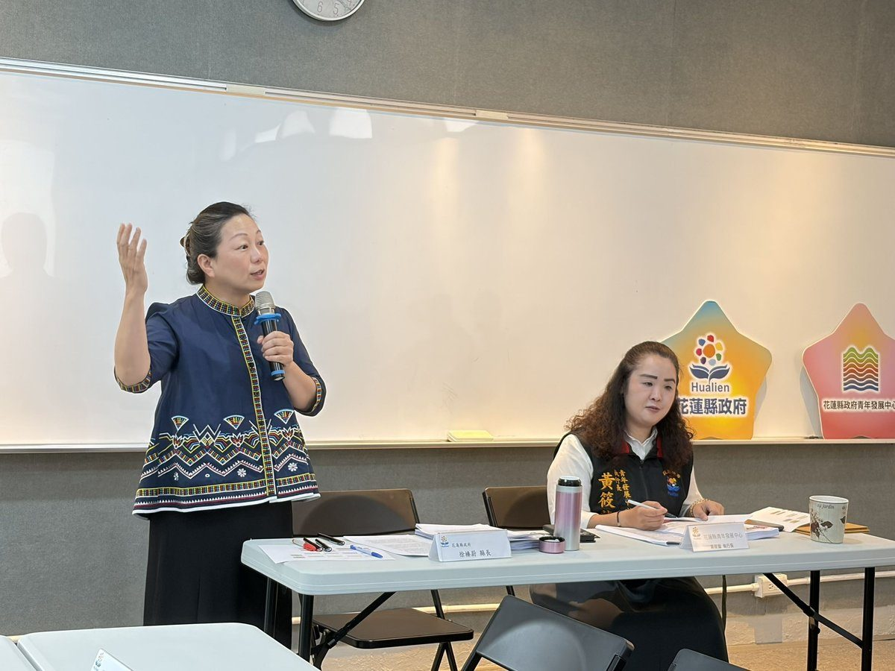

徐榛蔚與青年諮委面對面 成家育兒創業政策一次看

可樂電子報小編/編輯
為傾聽青年聲音、促進青年參與公共事務，花蓮縣政府11月6日召開第七屆第三次青年發展諮詢委員會議，由縣長徐榛蔚親自出席，與青年諮詢委員面對面交流，說明縣府從青年成家、育兒到創業發展的各項政策與資源，並透過提案討論廣納青年對地方發展的觀察與建議，讓青年的想法與政府政策接軌。

徐榛蔚於會中分享縣府多元青年政策，從人生不同階段的需求出發，涵蓋育前、育後的安心成家補助，以及HSH創新創業戰鬥營、地方產業創新研發推動計畫（地方型SBIR）、花蓮青年夢想家計畫、青年創業獎勵補助與創業貸款利息補貼等，提供青年從成家育兒到創業發展的完整支持，也讓青年更清楚縣府現有協助管道，鼓勵把創意與夢想化為實際行動。
會議共討論六項青年提案，議題涵蓋夜市觀光動線、青銀共融、公共空間活化、青年行動諮詢服務、節慶國際交流及在地原生植物培育。針對東大門國際觀光夜市，委員建議以人流調查及循環式遊逛動線試辦，提升遊客遊逛便利性與各區攤商曝光；另提出「青銀共融．花蓮洄瀾客廳」構想，以跨世代桌遊、輕運動與共享廚房打造青年與長者共融的社區空間。

在公共資源運用方面，委員建議研議瑞穗鄉社福館韻律教室增設小時制租借，讓空間使用更彈性；並提出「青年行動諮詢日」，整合青年發展中心、專業業師與青年諮詢委員資源，深入中區、南區及部落場域提供創業與政策諮詢，降低青年取得政府資源的門檻。另有花蓮幸福聖誕城導入城市報佳音交流、原生植物培育與公園綠地景觀改善等建議。
針對各項提案，縣府各權責單位於會中提出辦理情形與回應，包括持續維護東大門夜市既有導覽設施、鼓勵社區據點推動青銀共融、透過合作促進公共空間資源共享，並運用既有創業門診、業師諮詢及中區、南區課程培力服務青年需求；其他提案將依權責與資源條件研議後續推動方向，讓青年建言與實際政策及行政資源相互連結。
花蓮縣政府青年發展中心表示，青年諮詢委員會不僅是青年表達意見的平臺，更是連結青年與政府、促進政策交流的重要橋梁。透過縣長與青年面對面交流及各局處對提案的討論回應，讓青年更深入瞭解縣府政策，也讓政府掌握青年對地方發展的實際需求；未來將持續串聯青年政策與資源，深化公共參與，打造宜居、宜業且充滿發展機會的花蓮。
🌟 掌握花蓮在地第一手資訊・歡迎訂閱追蹤
深度紀實報導、在地精采影音專題，第一時間接收最新消息！